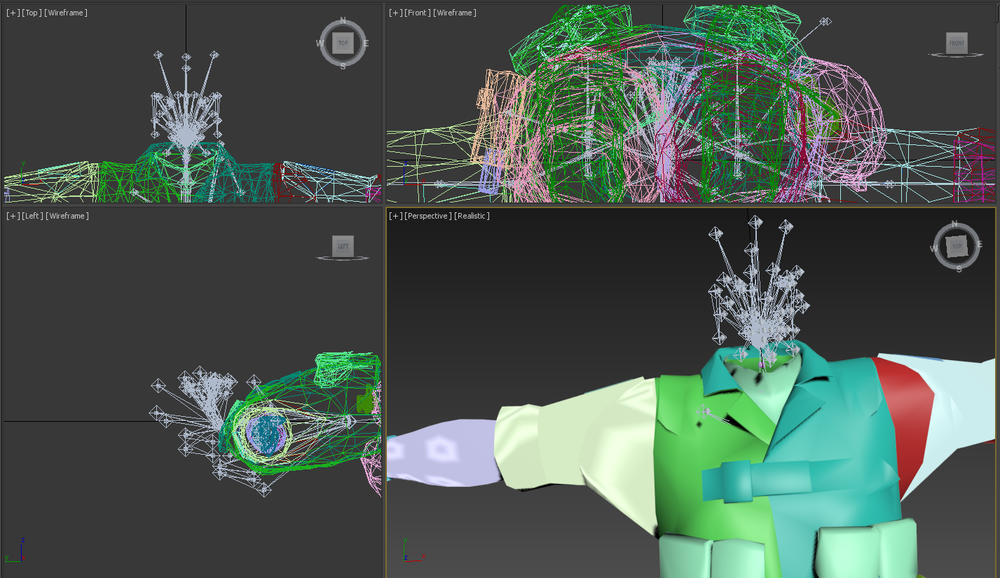
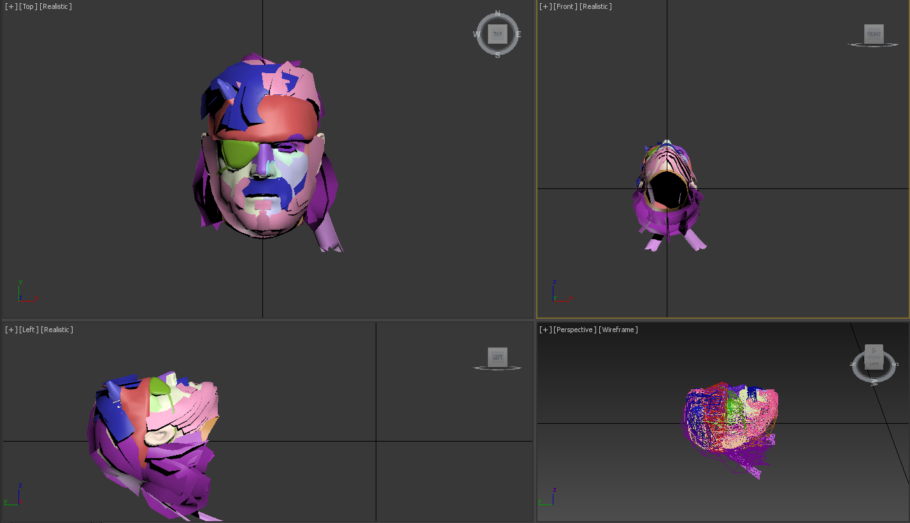
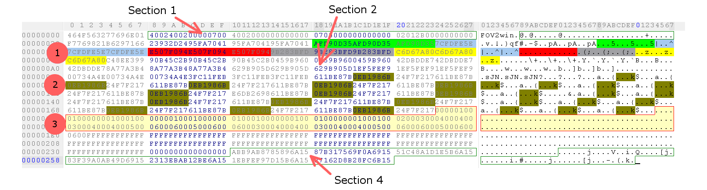
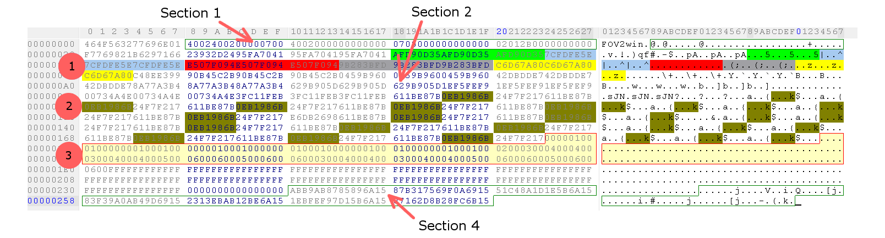
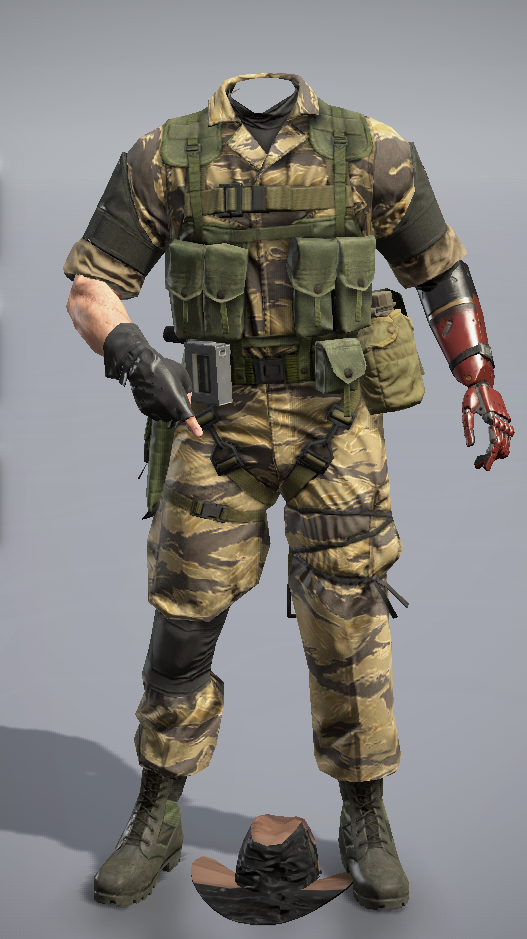
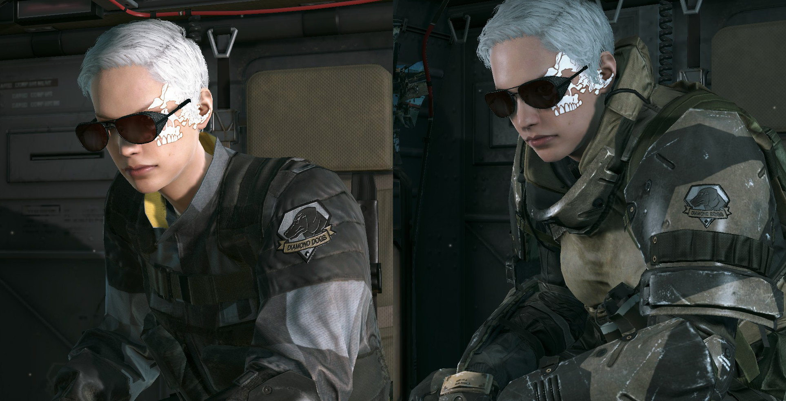
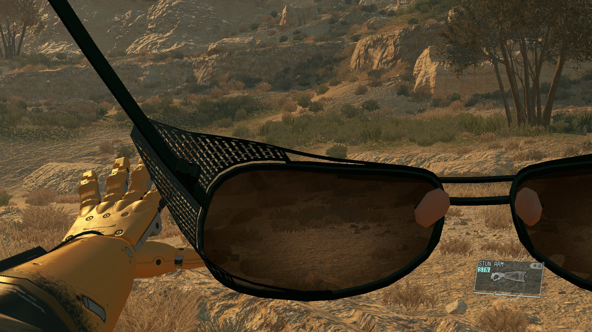
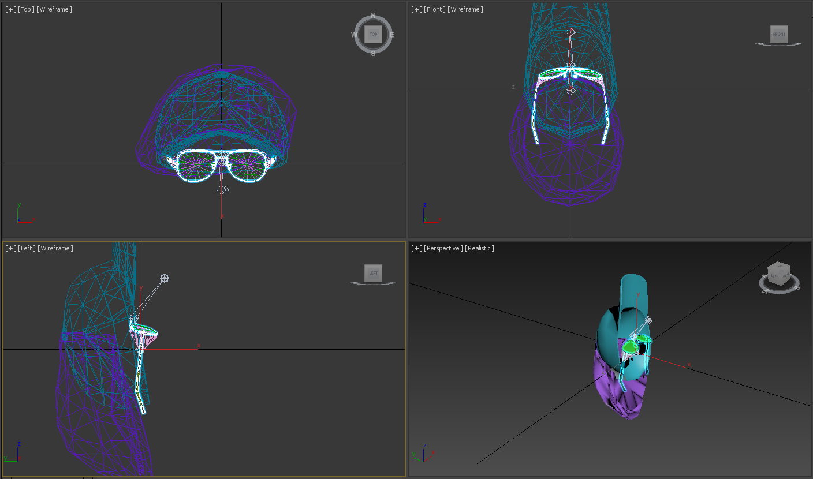
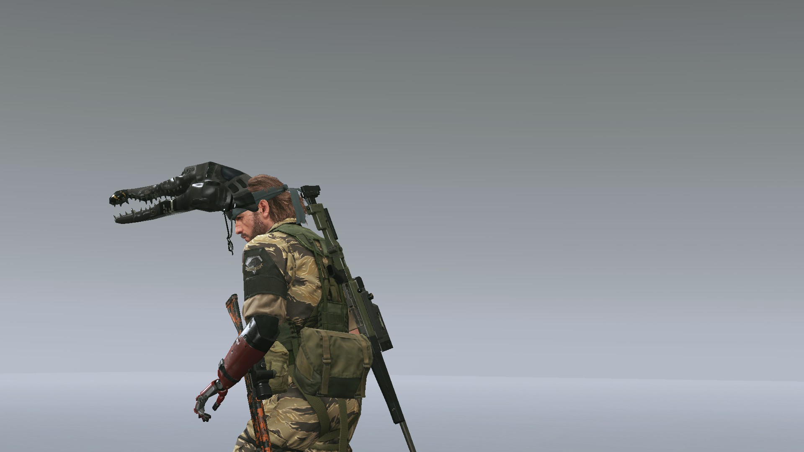

All pictures are pretty big, right click->view image to see the details.
FV2
FV2 files (Form Variation) are used in MGSV:GZ and MGSV:TPP to change the appearance of models.
They are used to show and hide meshes, apply different textures to meshes, apply physical simulation files, attach models and probably something else.
Before going into details, I need to explain how MGSV handles models.
Models
This info relates only to player and NPC models, wasn't interested in vehicles/weapons/animals.
TPP models usually consist of 2 parts - head and body.
 It allows the game to modify face without affecting the body and vice versa, i.e. equipping balaclava or changing your camo pattern.
Game uses it's own mechanism to attach head to the body, probably using .parts files
(without using fv2 to do it). I think that this mechanism is used in function
Player.AttachGasMask() and Player.VisibleGasMask()
(mission 43 Shining Lights, when Snake puts on his respirator).
Models have mesh, bones and connection point identificators in them. These identificators are used in .fv2 in hashed form to specify the element to modify. Partial list of these hashes was compiled by YouRePrettyGood. Hashing method is unknown. Only first 4 bytes of these hashes are used in fv2, full hashes can be found in fmdl.
It means that in order to hide some mesh on Snake's face we need to:
- Find his current face model;
- find corresponding mesh and it's name
- make a fv2 file that will hide mesh using it's name.
Problem #1: it is hard to find hashed name of mesh, fmdl is not fully explored (or at least I am unaware of it).
Problem #2: you need a command to show/hide meshes.
FV2 commands
In order to manipulate parts of model, fv2 needs not only names of these parts, but also commands on how to manipulate them.
These commands are also hashed in the same way as mesh names, but
there are no unhashed names. A couple of them are included in list above
(Base_Tex_SRGB for example), but others are a complete mystery.
Command are usually followed by a link to hashed filepath.
Providing wrong filepath or wrong filetype will usually crash the game,
i.e. the 'apply texture' command accepts only textures, 'hide mesh'
accepts hashed mesh names.
You will also need to use right syntax, which differs from command to command. This is also a big problem.
Format structure
First structure was made by YouRePrettyGood. Most of that info is right, but some sections are doubtful. Please keep in mind that I digged format with only one purpose - to combine 2 fmdls, so some bytes were ignored.
I am using file master\chunk0\fpks\plfova_sna0_face6_v00_fpk\Assets\tpp\fova\chara\sna\sna0_face6_v00.fv2 as an example.
Header
- 8 bytes -
464F563277696E01for TPP on PC
Index
Index contains info about section offsets, amount of referenced files, amount of filetypes (?).
Address: 0x8-0x27.
- Section 2 offset - 2 bytes,
3800(56 in dec) - Section 4 offset - 2 bytes,
4000(64 in dec) - Number of entries in section 2 - 2 bytes,
0000(0) - Number of entries in section 4 - 2 bytes,
0200(2) - Section 3 offset - 2 bytes,
4000(64) - Number of entries in section 3 - 2 bytes, always
0000(0) - 12 unknown bytes, can't say for sure what are they for - see the pic
- 4 unknown bytes, can't say for sure what are they for
- Byte 0x24 has 3 states:
- 00: used in face deco fovas, body and camos
- 01: face and hair fovas
- 02: 8 files:
These fovas have 2 referenced models in section 4 - can it be the count of fmdl files?chunk0\cm_unq_v007_eye0_fpk\Assets\tpp\fova\common_source\chara\cm_head\face\cm_unq_v007_eye0.fv2 chunk0\plfova_sna0_arm1_v00_fpk\Assets\tpp\fova\chara\sna\sna0_arm1_v00.fv2 chunk0\plfova_sna0_arm2_v00_fpk\Assets\tpp\fova\chara\sna\sna0_arm2_v00.fv2 chunk1\pfa0_main0_v00_fpk\Assets\tpp\fova\chara\pfs\pfa0_v00_a.fv2 chunk1\pfa0_main0_v00_fpk\Assets\tpp\fova\chara\pfs\pfa0_v00_b.fv2 chunk1\pfa0_main0_v00_fpk\Assets\tpp\fova\chara\pfs\pfa0_v00_c.fv2 chunk1\sva0_main0_v00_fpk\Assets\tpp\fova\chara\svs\sva0_v00_a.fv2 chunk2\f30011_fpk\Assets\tpp\fova\chara\vol\vol2_v01.fv2
- Byte 0x25 has 2 states:
- 00: almost every single fv2 file
- 01: 33 files, including mgo hats
- 4 unknown bytes, never bothered to look into them.
Section 1
Section 1 contains links to files from section 4 and commands on how to use them. This differs from file to file, sometimes section 1 is really small, sometimes it is really big. Usually it has a link to the main model, 0000 in our case.
Address: 0x28-until the beginning of section 2.
In the file sna0_face6_v00.fv2 section 1 is pretty small and has only 2 entries.
- Entry 1: 0x28-0x30, 8 bytes,
0000 FFFF FFFF FFFF. 0000 is a link to the first file in section 4 (head model, sna0_face6_cov.fmdl, in the same fpk). - Entry 1: 0x28-0x30, 8 bytes,
0100 FFFF 0000 0000. 0100 is a link to the second file in section 4 (sim file for bandana, sna0_bdn0_def.sim, in fpkd).
Section 2
Section 2 also contains links to files from section 4 (2 bytes per link) and commands on how to use them (4 bytes per command). This also differs from file to file, sometimes section 2 is empty, sometimes it is really big. It has links to models and textures. In our case it is empty.
Address: referenced in index section.
Section 3
Section 3 is always empty, as YouRePrettyGood claims. I haven't seen section 3 with elements either.
Address: referenced in index section.
Section 4
Section 4 contains reversed hashed filenames, 8 bytes long. They are hashed using CityHash64.
Address: referenced in index section.
How to read hashes:- Split hash by 2 symbols: 42 5A EA A1 88 A5 A2 84;
- Reverse their order: 84 A2 A5 88 A1 EA 5A 42;
- Drop first 2 bytes (file extension): A5 88 A1 EA 5A 42.
unknown@vault MINGW64 /j/mgs/mgsv_lua_dump/tpp/master (master)
$ grep -ri --include=*\.txt --include=*\.inf a588a1ea5a42
inf/0/00/fpks/output.txt:tpp/chara/sna/Scenes/sna0_face6_cov a588a1ea5a42
inf/chunk0/fpks/output.txt:tpp/chara/sna/Scenes/sna0_face6_cov a588a1ea5a42
Getting hashes for new files is also possible by using mgsv_path_hasher.
Extensions are (probably) constant and you can easily recognize them:
| Hash | Type |
| A2 84 | fmdl |
| 91 34 / 93 34 | sim |
| 6B 15 / 69 15 / 68 15 | ftex (usually texture/mask/another mask) |
Commands
As stated before, FV2 files have commands that do various actions with linked files. Known commands:
| Hash | Command | Count |
| 53A31F5E | TENTION_CHEST | 6 |
| DFA48733 | Base_Tex_LIN | 12 |
| AE22FDC3 | TENSION_LUARM | 30 |
| 41CAD26B | TENSION_RUARM | 30 |
| 2F8DA4F0 | TensionSubNormalMap_Tex_NRM | 74 |
| E507F094 | TENSION_EYER | 76 |
| 7CFDFE5E | TENSION_EYEL | 76 |
| 9B283BFD | TENSION_FHEAD | 76 |
| AFD90D35 | TENSION_CHEEKR | 76 |
| 95FA7041 | TENSION_CHEEKL | 76 |
| C6D67A80 | TENSION_NECK | 82 |
| 0AF744DD | Translucent_Tex_LIN | 107 |
| 7E6BAFC4 | TENSION_RTHIGH | 137 |
| 777C4B49 | TENSION_LTHIGH | 137 |
| 06DBACB8 | TENTION_LUARM | 152 |
| 2F780EBE | TENTION_RUARM | 152 |
| A619A499 | MatParamIndex_3 | 153 |
| 8E402E96 | VShift_UV | 176 |
| EB160E5E | UShift_UV | 176 |
| CBB6CB7B | Dirty_Tex_LIN | 292 |
| 0E2F5F06 | MatParamIndex_2 | 341 |
| 87F69B21 | Base_Tex2_SRGB | 570 |
| 77206689 | MatParamIndex_1 | 593 |
| E01A5105 | NormalMap_Tex_NRM | 678 |
| FF8784E3 | MatParamIndex_0 | 782 |
| 8558FD2D | MatParamMap_Tex_LIN | 1450 |
| 728B1AF9 | LayerMask_Tex_LIN | 1972 |
| E6DB2698 | Layer_Tex_SRGB | 2124 |
| 0EB1986B | SpecularMap_Tex_LIN | 2342 |
| 611BE87B | Base_Tex_SRGB | 3919 |
| 0E642277 | mostly used in MGO in hat fv2 | 19 |
| EB77FEBF | used for combining 2 models together | 31 |
| Hash | Target | Count |
| 4896BADF | MESH_eqpt2_DCL_OL0_IV | 4 |
| 8EECFA93 | MESH_bagU | 4 |
| DEA095E4 | MESH_greF_LOD6 | 4 |
| 6E9ECA61 | MESH_bag_B1_IV | 4 |
| F82C8371 | head_hair | 6 |
| 6849DFDF | ANIME_EYE | 6 |
| 01D16FA9 | fabric_mid_glossy | 6 |
| 8B9295EF | body_fox | 6 |
| B9DB0121 | body2 | 6 |
| 903B0217 | skin_white_male2 | 6 |
| D0DF8575 | body3 | 6 |
| D16E43F2 | mout_main0_def | 6 |
| D1C2B74E | face_patch | 6 |
| DD6D7773 | body1 | 6 |
| CF07DACD | ope_glove_L_mat | 8 |
| ADCE4DDC | ope_glove_R_mat | 8 |
| 8CFD744E | MESH_arm | 9 |
| E5FFD741 | MESH_rubberglobes_5fingers_IV | 13 |
| 96715738 | dds0_body0_mat | 13 |
| 93F8BC81 | dds0_eqip0_mat | 17 |
| 989F16BF | (ALWAYS FIRST SKL HASH) | 54 |
| 0185E8A9 | MESH_head | 97 |
| 4E7638DE | hair | 101 |
| 1BDD0582 | skin | 236 |
| 06C7BF63 | body | 380 |
| 49A05886 | eye | 548 |
These are commands that I've found in fv2 by using tables provided by YouRePrettyGood. Division between targets and command is based on command's name. Count numbers may be slightly off (±5) due to mods and me being unaccurate with files.
Sometimes commands have really weird syntax. Let's take a look at
chunk0\plparts_hospital_fpk\Assets\tpp\fova\chara\sna\sna1_v04.fv2.
This is fova responsible for adding dirt and cuts to snake during prologue.
 

As we can see, commands (1 and 2) are repeating without any file
links. Links are put separately from commands (3) in some sort of array.
The amount of FFFF-padding is also huge. I have a feeling that this
is related to this,
but I am not interested in textures that much.
Side note: this fova is using 7 textures:
| 2898587abb9ab.ftex | face |
| 10a9f5617b387.ftex | facemask |
| 25b1e1d8ac451.ftex | bandage |
| 19db40a9af383.ftex | body |
| 2be12abeb1323.ftex | bodymask |
| 25bd197efbf1e.ftex | pants |
| 3fc288b2d1607.ftex | pants mask |
Important commands
After weeks of digging, I've found 2 commands which apparently allow you to attach models to other models.
| Hash | Command | Count |
| 0E642277 | mostly used in MGO in hat fv2 | 19 |
| EB77FEBF | used for combining 2 models together | 31 |
First hash (0E642277) is used in both MGO and TPP. It's present in mgo hat fv2, using it in TPP fovas does nothing, so it may be MGO-only. Still, it should be noted.
Second hash (EB77FEBF) is what I was looking for. It takes 2 arguments:
- Skeleton hash, 4 bytes, usually it is 989F16BF (ALWAYS FIRST SKL HASH). It can be replaced with FFFFFFFF with no visible issues. I have tried to replace it with other target hashes (ie SKL_004_HEAD), but without success - attached model moves to your feet. Probably it happens because there is no such SKL hash in head's model.
- Link to the fmdl file, 2 bytes.
If you don't provide the command, leaving just a link to the fmdl file, it will be rendered at your feet. Link has to be put in some special order, moving it by 2 bytes left or right makes it disappear. Command has to be present in some special position as well, otherwise nothing will render (or the game will crash).
In the example above you can see a link to head model (0000) without any commands and yet head is placed in the right place. However, replacing the head model with another non-head model (I used mgo hats) moves the new 'head' to your feet.
I have 2 explanations for that:
- Game recognizes that head model and body model have matching connection points and attaches them one to another;
- There are special flags in the model i.e. head/body; game takes the 'head' and attaches it to the 'body'. No flag - render it at the feet level.
Model rendering also depends on byte 0x24 and 0x25 in index section. In order to render both models both bytes have to have a value of 01. I was unable to find a relation between the amount of models and the fact of render.
| Byte | Value | Note |
| 0x24 | 00 | No models rendered |
| 0x24 | 01 | Both models rendered |
| 0x24 | 02 | Both models rendered |
| 0x25 | 00 | New model moves to feet |
| 0x25 | 01 | Both models rendered |
There are only 18 fv2 files with 2 models which can be used for further research on that command. My mods are based on cm_unq_v003_eye1.fv2 since it's the cleanest one, other fovas such as pfs ones have a lot of stuff inside.
master\chunk0\cm_unq_v000_eye1_fpk\Assets\tpp\fova\common_source\chara\cm_head\face\cm_unq_v000_eye1.fv2
master\chunk0\cm_unq_v003_eye1_fpk\Assets\tpp\fova\common_source\chara\cm_head\face\cm_unq_v003_eye1.fv2
master\chunk0\cm_unq_v006_eye0_fpk\Assets\tpp\fova\common_source\chara\cm_head\face\cm_unq_v006_eye0.fv2
master\chunk0\cm_unq_v007_eye0_fpk\Assets\tpp\fova\common_source\chara\cm_head\face\cm_unq_v007_eye0.fv2
master\chunk0\plfova_sna0_arm1_v00_fpk\Assets\tpp\fova\chara\sna\sna0_arm1_v00.fv2
master\chunk0\plfova_sna0_arm2_v00_fpk\Assets\tpp\fova\chara\sna\sna0_arm2_v00.fv2
master\chunk1\ddr0_main0_v00_fpk\Assets\tpp\fova\chara\dds\ddr0_main0_v00.fv2
master\chunk1\ddr0_main0_v00_fpk\Assets\tpp\fova\chara\dds\ddr0_main0_v02.fv2
master\chunk1\ddr0_main0_v00_fpk\Assets\tpp\fova\chara\dds\ddr0_main1_v00.fv2
master\chunk1\ddr0_main0_v00_fpk\Assets\tpp\fova\chara\dds\ddr0_main1_v04.fv2
master\chunk1\ddr1_main0_v00_fpk\Assets\tpp\fova\chara\dds\ddr1_main0_v02.fv2
master\chunk1\ddr1_main0_v00_fpk\Assets\tpp\fova\chara\dds\ddr1_main1_v02.fv2
master\chunk1\pfa0_main0_v00_fpk\Assets\tpp\fova\chara\pfs\pfa0_v00_a.fv2
master\chunk1\pfa0_main0_v00_fpk\Assets\tpp\fova\chara\pfs\pfa0_v00_b.fv2
master\chunk1\pfa0_main0_v00_fpk\Assets\tpp\fova\chara\pfs\pfa0_v00_c.fv2
master\chunk1\sva0_main0_v00_fpk\Assets\tpp\fova\chara\svs\sva0_v00_a.fv2
master\chunk2\f30011_fpk\Assets\tpp\fova\chara\vol\vol2_v01.fv2
master\chunk4\s10140_d03_fpk\Assets\tpp\fova\chara\dds\ddr0_main0_v00.fv2Exploring the fv2
Copy hex values of fv2 file to your favorite text editor, split file by sections, then use the list of hashes to replace all known hashes with text. It will make file much clearer:
464F563277696E0150005000000003005000000000000000000000000000000000000000010100000000FFFFFFFFFFFF0100FFFFEB77FEBF989F16BF0200FFFFFFFFFFFFFFFFFFFF00000000000000005F7E60E40985A2849CDC9C9A4501913475F64D17D875A384header
464F563277696E01
index
5000 - section 2 offset
5000 - section 4 offset
0000 - section 2 entries
0300 - section 4 entries
5000 - section 3 offset
0000 - section 3 entries
unknown stuff
0000 0000 0000 0000 0000 0000 0000 0000
byte 24-25
0101
unknown stuff
0000
section 1
0000FFFF - link to head .fmdl
FFFFFFFF - padding?
0100FFFF - link to .sim
Attach_fmdl - command
(ALWAYS FIRST SKL HASH) - skl target
0200FFFF - link to new .fmdl
FFFFFFFF - padding?
FFFFFFFF - padding?
00000000 - padding?
00000000 - padding?
section 4
5F7E60E40985A284 - head .fmdl
9CDC9C9A45019134 - .sim
75F64D17D875A384 - new .fmdlApplying the fova
After making modifications you need to apply the fova to your model.
However there are problems. Player.ApplyFormVariationWithFile
doesn't work with head fovas at all, but only with body fovas. There
might be an additional parameter to that function to choose the region,
but I was unable to find one. It means that for head you will have to
replace existing head fovas. Fortunately there are only 16 of them
(not including battledress headcovers, mgs1 snake etc.)
| Filename | Note |
| plfova_plf0_msk0_v00.fpk | Female DD soldier (+chicken mask) |
| plfova_plf0_msk1_v00.fpk | Female DD soldier (+chick mask) |
| plfova_sna0_face0_v00.fpk | Small horn |
| plfova_sna0_face1_v00.fpk | Medium horn |
| plfova_sna0_face2_v00.fpk | Large horn |
| plfova_sna0_face4_v00.fpk | Small horn + bandana |
| plfova_sna0_face5_v00.fpk | Medium horn + bandana |
| plfova_sna0_face6_v00.fpk | Large horn + bandana |
| plfova_sna0_msk0_v00.fpk | Male DD soldier/Snake (+chicken mask) |
| plfova_sna0_msk1_v00.fpk | Male DD soldier/Snake (+chick mask) |
| plfova_sna7_msk0_v00.fpk | Parasite suit (+chicken mask) |
| plfova_sna7_msk1_v00.fpk | Parasite suit (+chick mask) |
| Gold/Silver heads below(?) | ---------- |
| plfova_sna9_face0_v00.fpk | Small horn snake |
| plfova_sna9_face1_v00.fpk | Snake (bandana+mullet) |
| plfova_sna9_face2_v00.fpk | Snake (bandana+mullet) |
| plfova_sna9_face3_v00.fpk | Snake (bandana+mullet) |
Let's use plfova_sna0_face4_v00 as an example. Original:
464F563277696E0138004000000002004000000000000000000000000000000000000000010000000000FFFFFFFFFFFF0100FFFF0000000000000000000000005F7E60E40985A2849CDC9C9A45019134464F563277696E0150005000000003005000000000000000000000000000000000000000010100000000FFFFFFFFFFFF0100FFFFEB77FEBF989F16BF0200FFFFFFFFFFFFFFFFFFFF00000000000000005F7E60E40985A2849CDC9C9A450191345227B06BAAA9A384
Index: changed addresses for section 2 and section 4 since we've added
a new command (3800 4000 -> 5000 5000). Since there is a new file
hash, amount of section 4 entries has to be changed as well (0200 -> 0300).
Bytes 0x24-0x25 must be 0101 instead of 0100 to render models.
Section 1: command EB77FEBF to attach model, target 989F16BF, link to
the file #0200 and some FFFF padding.
Section 4: new file 5227B06BAAA9A384 - tpp\chara\dds\Scenes\dds3_eqhd3_cov.fmdl.
This a DD beret taken from chunk2\s10050_d02_fpk. You will need to
add that file to plfova_sna0_face4_v00.fpk or tpp\pack\resident\resident00.fpk.
I suggest using resident00.fpk to avoid duplicating models saving
disk size.
There is some clipping, but this is definitely working. There are problems with distance between added cosmetic and head model. Distance changes because of player's base stance. Male and female soldiers have different poses. I think it was counted for MGO cosmetics (hence male and female hat versions), but there are no 'legal' cosmetics for TPP. Poses also change for different outfits (same head fova):
Another problem: attached hats are not counted as player's model. They are not disappearing in first person, obstructing view. It it unavoidable for soldier-wide cosmetics (see fmdl fixes below).
Soldier-wide cosmetics' fixes
As stated above, you can change appearance of all your soldiers by modifying fova with chicken hat (plfova_plf0_msk0_v00.fpk, plfova_sna0_msk0_v00.fpk). But only 2 models work with it without having to enable chicken mode:
- ewr3_eqhd0_cov.fmdl - hideo's glasses
- ewr0_eqhd0_cov.fmdl - ocelot's glasses
MESH_ROOT (ALWAYS FIRST MESH HASH) 35D648F974580000MESH_ROOT_V2 782A0D778E800000
MESH_ROOT_V2 was found by comparing glasses models using
3dsmax fmdl script by Jayveerk. I had to rewrite it in Python 2 to avoid
launching 3dsmax every time I need to look at model's structure - link.
I've also expanded fmdl hashes list a little with hashes from
skullface's hat (GZ and TPP versions, 62e7efe72cb98bb3d8b88977dcc9414f.fmdl -
wsp0_eqhd0_def.fmdl) and both glasses. New hashes list.
Important note on visibility:
Models used in *face* fovas can be hidden in first-person mode - just use MESH_ROOT for them and they will
be hidden.
However, models used in *msk* fovas must have MESH_ROOT_V2 to be shown and will obstruct your vision.
If you want to play with glasses, I suggest adding them to *face* fovas and leave hats for *msk* fova
Getting more hashes / exploring fmdl
Python script above was made to print fmdl sections in human form. Most sections have descriptions from the author in the script. Notable sections:
- 1.21 - reversed texture hashes
- 1.22 - command hashes, same as in fv2.

You can also move fmdls without 3dsmax with python script:
move_fmdl = True
print_sections = True
offset = [0, 0, 0.1]
parse_fmdl(r'C:\1.fmdl', print_sections, move_fmdl, offset)Script can apply mesh fixes as well: fmdl_mesh_fix(r'C:\1.fmdl') will overwrite the file with fixed mesh.
MGO hats
MGO hats can be added using the same way. Problems:
 In the first image you can clearly see the offset between cap and glasses+beret combo (beret is the violet ugly thing). Second image shows that offset ingame. It can be fixed by providing frdv file and adding it to your fv2 file.
How to mod MGO hats
Find a model you want to use (let's say hat0_main0_def.fmdl). Parse it with fmdl script to find out shift for section 1.22 and 1.21 (print_sections=True). Open fmdl in hex editor, replace
35D648F974580000 with 782A0D778E800000 (section 1.22) to make it visible.
Copy hashes from section 1.21 and reverse them (order is important):
156b3dcb9e506351
156855d8625e430c
156884483e1c10b0
156938337d71ab4b
1569886cb15d7938156b3dcb9e506351 - tex1.ftex
156855d8625e430c - tex2.ftex
156884483e1c10b0 - tex3.ftex
156938337d71ab4b - tex4.ftex
1569886cb15d7938 - tex5.ftexUnpack
0\00\Assets\tpp\pack\resident\resident00.pftxs with gsz_tool. Go to Assets\tpp\hats\textures\mgo\allclass\hat0 (create missing folders). Put your textures there.
Create test.dat.xml:
<?xml version="1.0"?>
<ArchiveFile xmlns:xsi="http://www.w3.org/2001/XMLSchema-instance" xmlns:xsd="http://www.w3.org/2001/XMLSchema" xsi:type="QarFile" Name="test.dat" Flags="3150304">
<Entries>
<Entry FilePath="/Assets/tpp/hats/textures/mgo/allclass/hat0/tex1.ftex" Compressed="false" />
<Entry FilePath="/Assets/tpp/hats/textures/mgo/allclass/hat0/tex2.ftex" Compressed="false" />
<Entry FilePath="/Assets/tpp/hats/textures/mgo/allclass/hat0/tex3.ftex" Compressed="false" />
<Entry FilePath="/Assets/tpp/hats/textures/mgo/allclass/hat0/tex4.ftex" Compressed="false" />
</Entries>
</ArchiveFile>/Assets/tpp/hats/textures/mgo/allclass/hat0/tex1
/Assets/tpp/hats/textures/mgo/allclass/hat0/tex2
/Assets/tpp/hats/textures/mgo/allclass/hat0/tex3
/Assets/tpp/hats/textures/mgo/allclass/hat0/tex408 ff 7e cd b4 81 6a 15 | Assets\tpp\hats\textures\mgo\allclass\hat0\tex1.ftex
64 0e 7e ab 16 9e 6a 15 | Assets\tpp\hats\textures\mgo\allclass\hat0\tex2.ftex
cd 84 cc a6 d7 f2 6b 15 | Assets\tpp\hats\textures\mgo\allclass\hat0\tex3.ftex
d3 73 85 dc df 5b 6b 15 | Assets\tpp\hats\textures\mgo\allclass\hat0\tex4.ftex
70 dc d6 27 ec 93 69 15 | Assets\tpp\hats\textures\mgo\allclass\hat0\tex5.ftexAdd textures to resident00.pftxs:
<Entry>
<Entries xmlns="Pftxs">
<EntryData FilePath="/Assets/tpp/hats/textures/mgo/allclass/hat0/tex1.ftex" />
<EntryData FilePath="/Assets/tpp/hats/textures/mgo/allclass/hat0/tex1.1.ftexs" />
<EntryData FilePath="/Assets/tpp/hats/textures/mgo/allclass/hat0/tex1.2.ftexs" />
<EntryData FilePath="/Assets/tpp/hats/textures/mgo/allclass/hat0/tex1.3.ftexs" />
</Entries>
</Entry>For the lazy
I've ported almost all MGO hats to TPP.
http://imgur.com/a/5rVAE - previews.
You can find models and textures here - mega.
How to use:
- Select hats you want to use (see 'previews' directory for filenames). Hats have different offsets for Snake/Avatar, DD soldier and DD soldier (female).
- If you selected MGO hats, you will need textures. Grab them from 'textures' directory, only for hats you want to use.
-
Unpack resident00.fpk (00.dat) with gzs/fpk tool, add fmdls saving the same structure:
/Assets/tpp/hats/__soldier_type__/__game_type__/(__hat_type__)/__filename.fmdl__You'll need __hat_type__ only for mgo hats. Pack it back. -
MGO textures: find resident00.pftxs (01.dat). Unpack with gzs_tool, add textures saving the same structure:
Assets/tpp/hats/textures/mgo/__hat_type__/__hat_name__/tex[0-9].([1-3].)ftex(s). Make xml entries for every file added (or just grab them from pftxs_entries.txt in models directory which is not available for all models because I forgot to save one file). Order is important: ftex->ftexs.1->ftexs.2 etc. Pack it back. You cannot have too many textures at once in one pftxs - game has a limit. What happens when you hit the limit. -
Select fovas depending on what player type you chose:
- plfova_plf0_msk0_v00 - female
- plfova_sna0_msk0_v00 - male/snake/avatar
- plfova_sna0_face(0-2)_v00 - snake/avatar without bandana
- plfova_sna0_face(4-6)_v00 - snake/avatar with bandana
- Add resident00.fpk, resident00.pftxs and plfova you chose to 00.dat. Pack .dat and launch the game. If it crashed, you did something wrong.
{kind=link}
You can use combinations of 2 fovas to have many cosmetics on snake (plfova_sna0_msk0_v00 + plfova_sna0_face). I also believe that you can have up to 4 cosmetics on dd soldiers (by editing hair, face deco and skin fovas for one particular soldier - see bioengie).
Some hats have clipping with your model (especially full-head models). It happens because soldiers have different head shapes and you need to adjust model coordinates for every soldier. Can be solved by making a proper frdv file (or just move them with python script).
Physics are missing for some models. You can enable them by adding .sim file to fv2. You can find .sim files in models/ddmale/sim directory.
Three hats are broken - MGO dd beret, afro and ponytail. Maybe it has something to do with MESH_ROOT_V2, I was unable to make them look good. Use beret from tpp instead.
Pics: